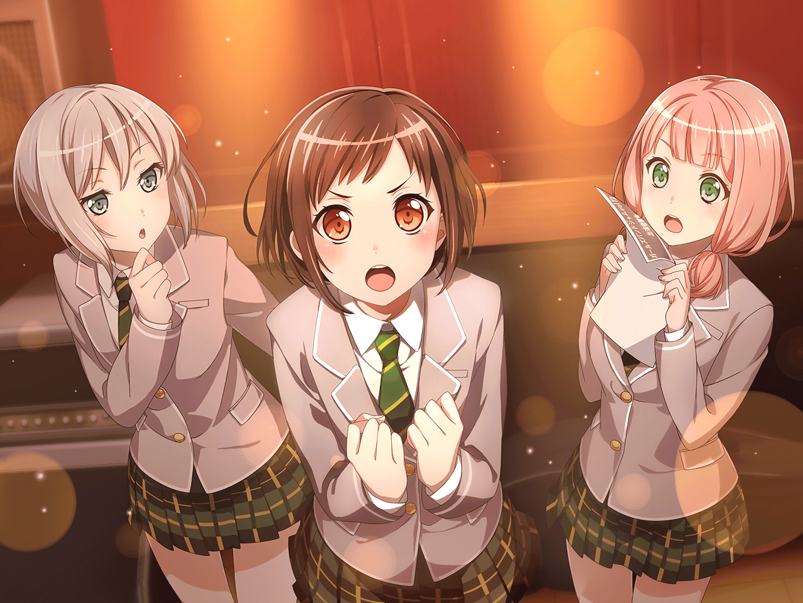

数日後
スタジオ受付
ひまり
すみませ〜んっ！ １７時から予約してた上原ですっ！
スタジオスタッフ
お〜、ひまりちゃん！ Bの部屋、もうみんな入ってるよ
ひまり
やば、私が最後かぁ〜！ 急がなくちゃ……！
スタジオスタッフ
あ、そうだ。
ひまりちゃん、スタジオ入る前にちょっと話、いいかな？
ひまり
……え？

スタジオ
モカ
ひーちゃん遅いじゃん〜
巴
ひまりが遅刻なんて珍しいな……って、どうした？ 真剣な顔して
ひまり
さっきね、スタジオの人にこのチラシを貰ったんだけど……
つぐみ
『ガールズバンドジャムvol.12 出演者募集』……？
これって……
巴
ガルジャムって言ったら、ガールズバンド界隈では結構メジャーなイベントだよな
モカ
もしかして〜、あたし達がこのイベントに出るとかって話？
ひまり
そのまさか
ひまり
スタジオの人が最近頑張ってるねって言ってくれたの。
それで、スタッフさんが推薦するから
ガルジャムに申し込んでみたらって勧めてくれて……
巴
確かに、ガルジャム出身の人気バンドは多い。
アタシも客として何回か行ったけど、
なかなかアツいイベントだったよ
巴
アタシ達が今まで出てきたイベントは学生バンド中心の、
規模が小さいヤツだ。
ガルジャムはそれとは規模も、熱量も全然違う……
巴
いくらスタッフの人が推薦してくれたとしても、
あの場で、実際にライブをやるのはアタシ達だ……
一同
……

つぐみ
……出ようよっ！！！
ひまり
つぐ！？
つぐみ
で、出ようっ！ うん、出たほうがいいよっ！
つぐみ
前の練習で、みんなライブに出たいって言ってたし
チャ、チャレンジだと思って、出てみようよっ！
一同
……
つぐみ
あ、あれっ！？ 私、変な事言っちゃったかな……！？
ご、ごめん……っ
巴
ぷっ……はははははっ。変な事なんか言ってないよ。
つぐ、よく言った
モカ
つぐ、かっこいい〜
つぐみ
ええっ、ちょっと、やめようよぉ……
巴
つぐの言うとおり、チャレンジしてみるのもいいかもな。
蘭、モカ、どう思う？
蘭
いいんじゃない
モカ
蘭が出るなら、あたしも出る〜
つぐみ
蘭ちゃん、モカちゃん……！
ひまり
やっっっったぁーーー！！ それじゃ、決まりだねっ！
巴
ああ！
ひまり
そうと決まれば、練習がんばらなきゃ！
ん～～！ なんかやる気出てきたっ
ひまり
みんな、頑張ろうね！！
せーのっ、えい、えい、おー！
一同
……
ひまり
……って、みんな言ってよぉ～！ もぉ～！！
蘭
……さすがに、えいえいおーはないでしょ
ひまり
ええっ！？
巴
確かにちょっと恥ずかしい、かな……
ひまり
え～！ 巴まで！ ひどいよぉ～！！
一同
あはははっ
巴
……冗談はさておき、本気で練習しないとな。
アタシ達の晴れの舞台だ。派手にかましてやろうぜ！
モカ
えいえいおー
ひまり
今言うの！？
蘭
モカ。こないだひっかかったフレーズ、合わせたい
モカ
おっけー
蘭
じゃ、その２つ前のフレーズから……
巴
あの２人、早速火がついたみたいだな
つぐみ
私も、がんばらなくちゃ……！
ひまり
うんっ、がんばろう！
スタジオ受付
ひまり
ふう〜。休憩、休憩。
気合入れてたとはいえ、さすがにぶっ続けは疲れる〜
蘭
……だから、それは……！
ひまり
（ん……あれは、蘭？ 誰かと電話してる……？）
蘭
いちいちあたしのことに口出さないで
蘭
……だから！ 関係ないって言ってるでしょ！
ひまり
……！
蘭
はぁ……
ひまり
（蘭、誰かと言い争ってたみたいだけど……どうしたんだろう）
モカ
蘭〜？
蘭
ごめん、今戻る
モカ
うん。もう１回さっきのところ、やってみよ～
ひまり
（蘭の電話のこと、モカなら何か知ってるかな……？
様子がおかしかったし、ちょっと心配だな……）